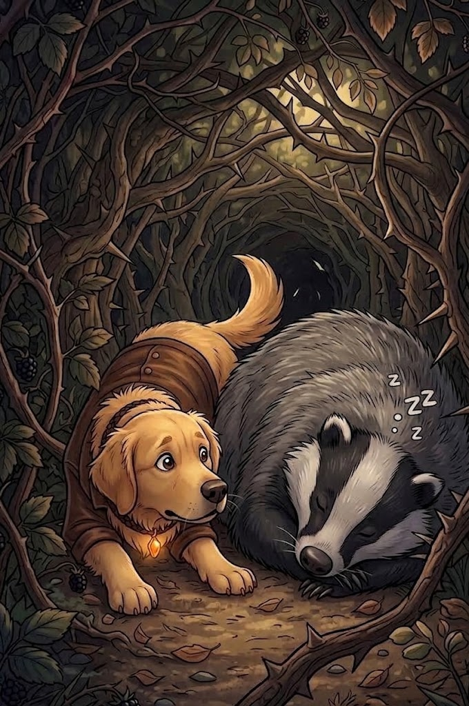

2/3
Camino actual: El Guardián Dormilón
🔊 Narración:
Nami se arrastra bajo las ramas con las orejas gachas para que las espinas no jalen su pelaje. De pronto, su agudo olfato capta algo.
Un enorme tejón está profundamente dormido en el medio del sendero, roncando ruidosamente. El espacio para pasar es muy estrecho y Nami duda sobre qué hacer.
♦ ───── ♦